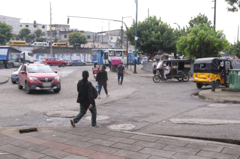
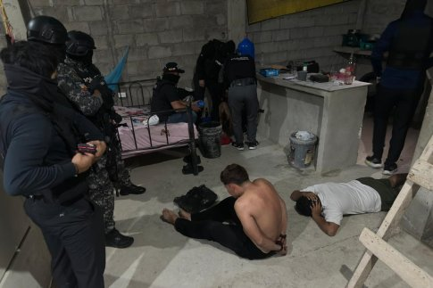
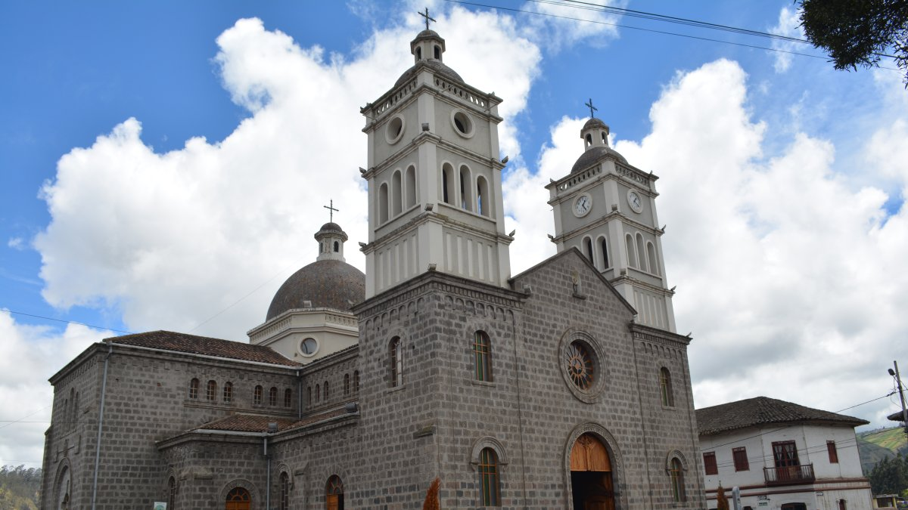
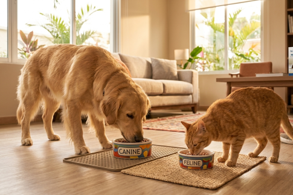

Guayaquil: Ataque armado en Pascuales dejó a dos víctimas cerca de parada de buses.

El acto criminal ocurrió la tarde del jueves 7 de mayo en la parroquia Pascuales. Los atacantes se movilizaban en una motocicleta.
Así celebraron los planteles de Guayaquil el Día de la Madre

La llamada “reina del hogar” fue homenajeada por sus hijos en una jornada en la que no faltaron los gestos de cariño, la música y la alegría familiar.
En Santa Elena caen presuntos Choneros que extorsionaban a comerciante: ¿cuánto le exigían?.

Uno de los detenidos registraba antecedentes penales. La víctima recibía mensajes y llamadas extorsivas a través de WhatsApp.
Iglesia de San Antonio de Pasa: La joya arquitectónica de Ambato

Devoción, tradición e historia. Este templo que fue construido con mingas ha resistido al tiempo y terremotos. Conozca su historia.
¿Cuántas veces al día debe comer tu mascota? Guía de expertos para una nutrición ideal

Establecer horarios fijos y consultar periódicamente al veterinario son prácticas fundamentales para asegurar una vida activa y equilibrada.